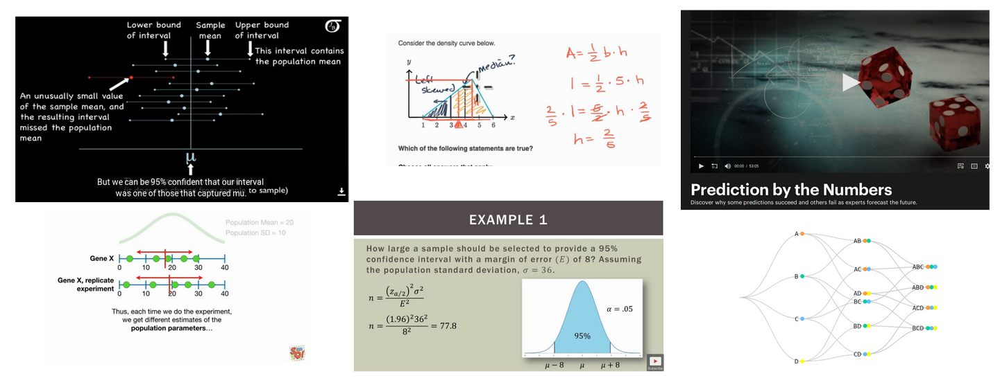

Where to learn Statistics
So, you want to learn statistics but you’re not sure where to start? Don’t worry. My generous Internet friends on LinkedIn and Twitter have you covered. Here’s what they recommend.

Best
Brandon Foltz' Stats 101 and Josh Starmer's StatQuest top the charts. Recommendations were hearfelt and enthusiastic. Their video series have markedly different styles, but both have broad content coverage, clear organization, and beginner-friendly pacing.
Excellent
- Khan Academy's Statistics and Probability Course
- Seeing Theory, created by Daniel Kunin , captivating animations illustrating foundational statistics concepts.
- Stanford Lagunita's Probability and Statistics Course
- Duke University's Introduction to Probability and Data on Coursera
Very Good
These are all highly recommended as well. Every one has sparked at least one quantitative career.
- Open Intro Statistics course, a straightforward course, with practical implementation tips for working with real data sets.
- JB Statistics , a rock-solid sequence of lessons by Jeremy Balka.
- Prediction by the Numbers, a Nova television special. A rich one-hour video with PBS' production values.
- Harvard's Stat110 Probability course, taught by Joe Blitzstein.
- Udacity's Introduction to Statistics course, taught by Sebastian Thrun.
There were also some books that people felt strongly about.
- Discovering Statistics Using R by Andy Field. Field's playfulness and storytelling is matched only by the clarity of his explanations.
- Statistics for Engineers and Scientists by William Navidi
- Naked Statistics: Stripping the Dread from the Data by Charles Wheelan
I was surprised at the volume of recommendations. I encourage you to check out the comment threads on the original LinkedIn and Twitter posts. There are lots of other videos, courses, and books that students of statistics have found helpful and, in some cases, life changing.
Learning statistics is different than learning the multiplication table. It requires learning concepts that are abstract and unfamiliar. It’s not enough to have them explained once or twice. Like diamonds, it’s helpful to have them illuminated from several directions in different kinds of light to really get a sense of them. I’ve been through seven different statistics courses over the course of my training, most of them at the introductory level. Every time I’ve thought, "Wow, I understand statistics so much more clearly now." And I expect that I will feel that way after the next time too.
My best advice is to try out a handful of these. We are all at different places in our understanding, and we all have different ways of seeing the world and absorbing new ideas. Nowhere is this more apparent then when trying to comprehend entirely new concepts. These courses, books, and lectures have all been a perfect fit for someone. I encourage you to find the ones that are perfect fit for you.